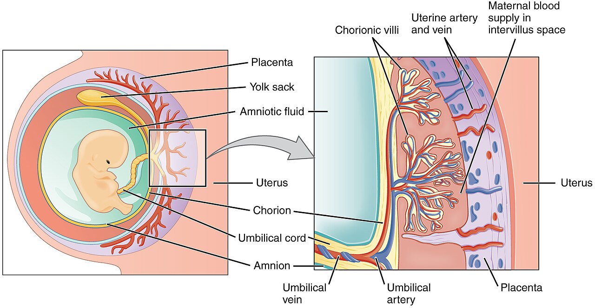

Thai kỳ tạo nhiều thay đổi về tuần hoàn, tiêu hóa và cảm giác vận động. Mức thay đổi khác nhau giữa người và từng giai đoạn; một đường nhịp tim tăng dần không đủ kết luận thai khỏe hay cơ thể chỉ đang thích nghi bình thường.
Tình huống minh họa: Mạch tăng trong thai kỳ cần được đọc cùng cảm giác và thăm khám. Một mẫu đường cong giống nhóm nghiên cứu không tự bảo đảm thai khỏe hoặc giải thích mọi triệu chứng mới.
Thích nghi thai kỳ không tạo ra một vùng nhịp tim an toàn chung
Thai kỳ làm thay đổi nhu cầu tuần hoàn và cảm nhận gắng sức. Vì vậy, so với nền trước mang thai có thể hữu ích để mô tả trải nghiệm, nhưng các ngưỡng vận động của người không mang thai không tự trở thành giới hạn an toàn. Cũng không có một bảng nhịp tim theo tuổi đủ để bảo đảm an toàn cho mọi thai kỳ.

ACOG khuyến khích vận động ở nhiều thai kỳ không biến chứng và nêu mục tiêu chung khoảng 150 phút mức vừa mỗi tuần. Tuy nhiên, người đã tập nhiều và người mới bắt đầu cần những cách tăng tiến khác nhau. Tình trạng thai, bệnh nền, phương pháp tập và nguy cơ ngã hoặc va chạm đều có thể làm thay đổi kế hoạch.
Talk test và cảm giác gắng sức giúp trao đổi về cường độ thực tế, không phải giấy phép bỏ qua triệu chứng. Đau ngực, choáng, chảy máu, rỉ dịch nghi nước ối hoặc co đau đều là những tín hiệu cần dừng và liên hệ chăm sóc. Với hậu sản, nguyên tắc vẫn là trở lại từ từ khi phù hợp y khoa, không dựa duy nhất vào một ngày lịch hay một điểm hồi phục xanh. 2 3
Nhịp tim, thể tích nhát bóp và giới hạn suy luận
Một nhịp tim là một lần co bóp, nhưng lượng máu bơm đi còn phụ thuộc thể tích nhát bóp. Ở mức khái quát, cung lượng tim = nhịp tim × thể tích nhát bóp. Đây là lý do hai người có thể cần nhịp tim khác nhau để đáp ứng cùng một nhu cầu tuần hoàn. Tập bền có thể góp phần tạo những thích nghi tim mạch, nhưng không thể suy trực tiếp kích thước tim hay thể tích mỗi nhát bóp từ một số mạch trên cổ tay.
Nhịp tim còn thay đổi do tư thế, nhiệt, sốt, cảm xúc và thuốc. Mạch thấp ở người tập luyện không được hiểu giống mạch thấp mới xuất hiện kèm choáng. Ngược lại, một lần mạch cao sau vận động hoặc khi lo lắng không tự xác định bệnh. Phạm vi thường được nêu cho người lớn lúc thức và nghỉ không phải mục tiêu bắt buộc trong mọi giai đoạn ngủ.
Khi xem biểu đồ ban đêm, nên hỏi cách thiết bị định nghĩa “nhịp tim nghỉ”: trung bình, giá trị thấp hoặc một cửa sổ cụ thể. Một hình võng hay đường giảm dần chỉ là mô tả của đường cong; nó không cho biết chính xác lúc nào gan ngừng chuyển hóa hoặc lúc nào cơ thể hoàn tất sửa chữa.
Một phép tính minh họa, không phải cách suy tim khỏe từ đồng hồ
Nếu dùng các số giả định 70 nhịp/phút và 70 mL mỗi nhát bóp, cung lượng theo phép nhân là 70 × 70 = 4900 mL/phút. Hai thành phần có thể thay đổi, nên chỉ biết nhịp 70 chưa cho biết kết quả còn lại. Đồng hồ ghi mạch cũng không đồng thời đo thể tích nhát bóp bằng phép nhân này.
Phân biệt như vậy giúp tránh ngộ nhận “mạch càng thấp thì tim chắc chắn càng khỏe”. Mạch chịu cả nhu cầu hoạt động và điều hòa, trong khi khả năng đáp ứng tuần hoàn cần bối cảnh rộng hơn. Với triệu chứng, câu hỏi quan trọng là điều gì đang thay đổi và ảnh hưởng ra sao, không phải liệu số của bạn có thấp hơn người khác. 4 5 6
BBT và nhiệt độ da trả lời những câu hỏi khác nhau
Nhiệt độ cơ bản là nhiệt độ khi cơ thể hoàn toàn nghỉ, thường được ghi ngay sau thức dậy trước hoạt động. Sau rụng trứng, thay đổi nội tiết có thể đi cùng một mức nhiệt cao hơn so với pha trước. Giá trị hữu ích nằm ở mẫu thay đổi của một chuỗi đo nhất quán, không phải một số nhiệt riêng lẻ.
Cảm biến trên nhẫn hoặc cổ tay thường ghi nhiệt độ da ban đêm hoặc độ lệch so với nền. Nhiệt độ da chịu thêm ảnh hưởng của môi trường, tuần hoàn ngoại vi và độ tiếp xúc. Vì vậy, không lấy ngưỡng của nhiệt kế miệng đặt thẳng lên biểu đồ độ lệch nhiệt da. Sốt, lịch ngủ khác thường và những yếu tố sinh hoạt khác cũng cần được ghi nhận.
Tín hiệu nhiệt thường có ích hơn trong việc gợi ý rụng trứng đã xảy ra, trong khi những ngày dễ thụ thai nhất có thể nằm trước lúc bạn thấy rõ sự tăng nhiệt. Cũng không có đường cong ba pha hay số ngày nhiệt cao nào đủ để tự xác nhận mang thai và tình trạng thai. Câu hỏi đó cần que thử phù hợp, rồi đánh giá y tế nếu có triệu chứng đáng lo. 7 8 9
Bảng đối chiếu để đọc đúng thông tin
| Tình huống | Cách tiếp cận | Không mặc định |
|---|---|---|
| Thai kỳ không biến chứng | Thảo luận vận động phù hợp | Phải nằm nghỉ hoàn toàn |
| Mới bắt đầu tập | Tăng tiến từ mức dễ chịu | Sao chép cường độ người đã tập lâu |
| Có biến chứng hoặc bệnh nền | Kế hoạch riêng từ đội ngũ chăm sóc | Mục tiêu chung vượt mọi chỉ định |
| Dấu hiệu cảnh báo | Dừng và liên hệ chăm sóc | Cố hoàn thành bài vì đồng hồ báo tốt |
| Sau sinh | Trở lại theo hồi phục thực tế | Một mốc tuần cho phép mọi bài tập |
Ứng dụng thực tế: làm gì và đánh giá bằng cách nào?
Duy trì lịch khám thai và hỏi đội ngũ chăm sóc về thay đổi bạn nhận thấy. Nếu dùng thiết bị đeo, xem dữ liệu như thông tin bổ sung và ghi triệu chứng đi kèm; không tự đặt mục tiêu giảm nhịp tim bằng hạn chế ăn hoặc tập quá sức.
- Ghi điều ảnh hưởng cuộc sống. Thời điểm, đau, chảy máu, giấc ngủ hoặc mức khó chịu cụ thể giúp làm rõ câu hỏi.
- Ghi những thay đổi liên quan. Thuốc, tránh thai, lịch sống, khả năng mang thai và giai đoạn sau sinh có thể đổi cách diễn giải.
- Chọn hỗ trợ theo mục tiêu. Có thai, tránh thai, giảm đau và điều chỉnh tập là những mục tiêu khác nhau; không dùng một biểu đồ thay cho mọi quyết định.
- Chuẩn bị trao đổi khi cần. Mang diễn biến và điều đã thử, hỏi rõ lựa chọn cùng kế hoạch theo dõi thay vì tự mua một bộ xét nghiệm hoặc phác đồ bổ sung.
Khi nào nên tìm hỗ trợ?
Dữ liệu người không mang thai không tự áp dụng cho thai kỳ. Không có một ngưỡng đồng hồ bảo đảm thai bình thường ở mọi người.
Đau ngực, khó thở nhiều, ngất hoặc chảy máu cần đánh giá sớm; không chờ điểm hồi phục thay đổi mới tìm hỗ trợ.
Nguồn tham khảo và phạm vi hỗ trợ
-
NHS — Common health problems in pregnancy — Public health guidance. Hỗ trợ: Triệu chứng thường gặp trong thai kỳ.
-
ACOG (2020) — Physical Activity and Exercise During Pregnancy and the Postpartum Period — Committee guidance. Hỗ trợ: Vận động thai kỳ, cá nhân hóa và dấu hiệu dừng tập.
-
ACOG — Exercise After Pregnancy — Professional patient guidance. Hỗ trợ: Trở lại vận động sau sinh tùy phương pháp sinh và biến chứng.
-
American Heart Association — All About Heart Rate — Professional patient guidance. Hỗ trợ: Nhịp tim nghỉ, yếu tố ảnh hưởng và triệu chứng cần khám.
-
Kellmann et al. (2018) — Recovery and Performance in Sport: Consensus Statement — Consensus statement. Hỗ trợ: Phục hồi cần cá nhân hóa, gồm tải tập và áp lực cuộc sống.
-
Ross et al. (2016) — Importance of Assessing Cardiorespiratory Fitness in Clinical Practice — AHA scientific statement. Hỗ trợ: Thể lực tim phổi và đánh giá nguy cơ sức khỏe.
-
ACOG — Fertility Awareness-Based Methods of Family Planning — Professional patient guidance. Hỗ trợ: Chất nhầy, BBT, thời điểm sinh sản và giới hạn tránh thai.
-
NHS — Doing a pregnancy test — Public health guidance. Hỗ trợ: Thời điểm thử thai và xử trí kết quả âm tính sớm.
-
NHS — Ectopic pregnancy: symptoms — Public health guidance. Hỗ trợ: Đau bụng, chảy máu, đau vai và chăm sóc khẩn.
Cập nhật nội dung và nguồn: 26/10/2026. Nội dung giáo dục; chưa có xác nhận duyệt bởi bác sĩ.